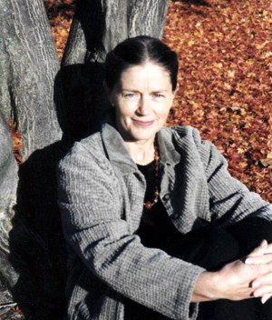
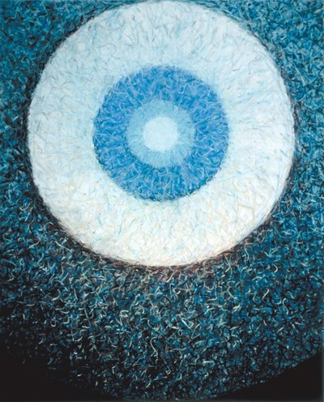
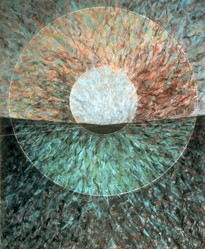
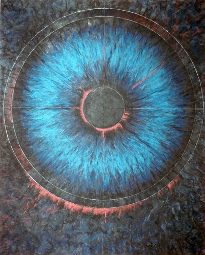
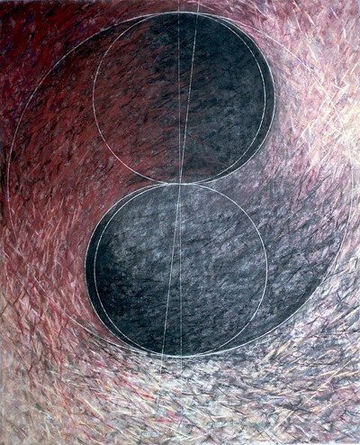
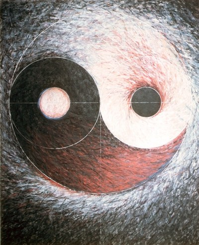
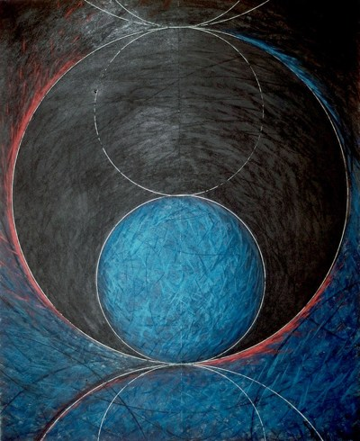
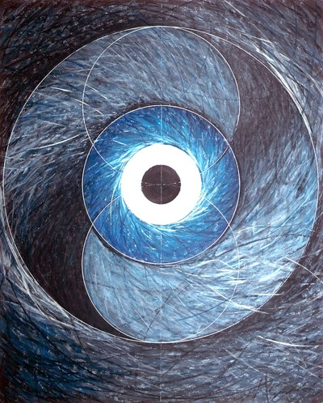
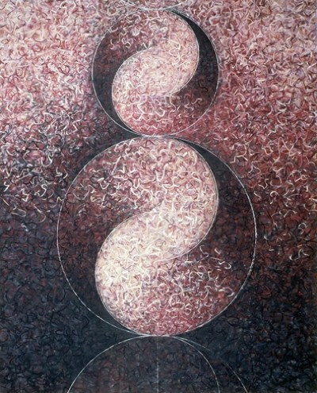

Jester-Knight
Literature
Film
Music
Visual Art
Tributes
Submissions
Links
Contact
Astrid Fitzgerald

Born and educated in Switzerland, Astrid Fitzgerald has been living and working in the United States since 1961. While working at various jobs, including the Museum of Contemporary Crafts in NYC, she attended art classes at the Art Students League, F.I.T. and the Pratt Graphics Center. Encouraged by an award for her entry in the New Yorker Theater mural competition 1971, she began to work full time, creating abstract canvases, works on paper and prints.
For over twenty-five years, her work has explored philosophical geometry, including the Fibonacci sequence, the Pythagorean Theorem and, most importantly, the Golden Mean proportion – a unique ratio preferred by nature as the most advantageous geometry for growth and energy conservation. Her artistic work, as well as her writing has always been closely aligned with her quest for the nature of being.
Fitzgerald’s work has been written and spoken about by art historian, Roger Lipsey, and her career chronicled in an interview with Julie Karabenick, curator of Geoform.
Her work has been shown in the US, Europe and Asia in numerous solo and group exhibitions, and is represented in public, corporate and private collections, among them the Aldrich Museum of Contemporary Art, Wellesley College, Marymount College, Rockefeller Center Collection, I.M. Pei & Partners, NYC, PES Architects, Nagoya, Japan, I.B.M. Collection, DiGiacomo Architects, NYC. Site-specific installations include Marcel Breuer Building, Boca Raton, FL, UBS Securities, NYC.
Recent solo shows include The Gallery at R&F, Kingston, NY 2011; Unison Gallery, New Paltz, NY, 2011; The Pearl Arts Gallery, Stone Ridge, NY 2008; LoRiver Gallery, Beacon, NY in 2005; Galerie Raubach, St. Gallen, Switzerland in 2004, and Muroff- Kotler Visual Arts Gallery at SUNY Stone Ridge, NY in 2000. Fitzgerald’s installation Amish Quilts was chosen by the Jury of the Artcanal in Le Landeron, Switzerland to represent the United States during expo02.
She can be found online at astridfitzgerald.com
The pieces below are from Astrid's Works in Pastel
Here is a video description of Astrid's work.
Art (click image to view full size):

Quantum I No. 857

Quantum VII No. 863

Quantum XIX No. 875

Quantum XV No. 871

Quantum XVIII No. 874

Quantum XXII No. 878

Quantum XXIII No. 879

Quantum XXIX No. 890